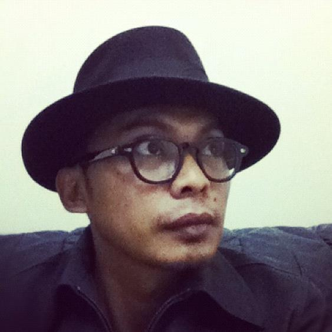

ABOUT
Profile Summary
Esphynol is a medical doctor after graduating with a bachelor's degree in Medicine at the University of Padjdjaran, West Java in 2003. Early in his career, he served with the Malaysian Armed Forces under the Ministry of Defense until retiring as a medical officer with the rank of Major (Dr) in 2010. In the public community he joined the Faculty of Medicine, University of Technology MARA (UiTM) as a trainee lecturer in the field of neurosurgery and worked at Hospital Sg. Buloh for two years. In 2013, he ventured into the field of entrepreneurship in the private sector by administering several private clinics and later joined a corporate IT company as a healthcare advisor. He has also filled the position of Business Development Manager in an effort to grow the company's business in the healthcare sector.
Expertise
Health advisor, clinical & medical consultation, medical cover, occupational health and surveillance, health administration, internal audits, medical board, paramedic instructor.
Facts
Medical Doctor with more than 10 years of administrative and clinical experience in various settings.
SKILLS
Leadership
85%
Professionalism
90%
Organisational Skills
75%
Communication Skills
80%
Team Management
80%
Decision Making
90%
Problem Solving
80%
Diagnostic
90%
Teaching Skills
85%
ICT & Computing
90%
WORK EXPERIENCE
2019 - Present
Senior Doctor
Healthcare Advisor
Freelance
Malaysia, Klang Valley
Dec 2014 - 2018
Corporate Health Advisor
Business Development Manager (Healthcare)
MY ONE Corporation Sdn. Bhd.
Malaysia, Kuala Lumpur
Jul 2012 - Jul 2014
Medical & Health Services Manager
Private Practitioner
Malaysia, Shah Alam
Apr 2010 - Jun 2012
Senior Medical Officer / Neurosurgical trainee
Trainee Lecturer in Neurosurgery (Neuroanatomy)
University of Technology MARA, Hospital Sg. Buloh
Malaysia, Shah Alam & Sg. Buloh
Nov 2007 - May 2008
Medical Officer for Forward Medical Team & Welfare Officer
Malaysian Medical Unit IV (MMU IV)
United Nations Peace Keeping Operation
Morocco, MINURSO HQ, Western Sahara, Laayoune
Mar 2004 - Jan 2010
Medical Service Corps Officer
Staff Officer (General Medical)
Armed Forces Medical Officer
Royal Medical Corps HQ, Military Hospital, Medical Battalion
Military Medical Services in Kuala Lumpur, Sabah, Sarawak & Melaka
2003 - 2004
House Officer Compulsory Service
Sarawak General Hospital
Malaysia, KuchingEDUCATION
2015
Occupational Health and Industrial Hygiene Course For Doctors
National Institute of Occupational Health & Safety (NIOSH)
Malaysia, Selangor
2007
United Nations Peace Keeping Operation & Coordination Course
Malaysian Peacekeeping Centre
Malaysia, NS
2005
Medical Examiner of Divers (MED)
Institute of Underwater & Hyperbaric Medicine
Malaysia, Perak
2003
Bachelor Degree, Doctor of Medicine (M.D)
Universitas Padjadjaran
Indonesia, West Java, Bandung
INTEREST
ICT and Computing
Proactively extend market-driven e-tailers rather than enterprise-wide supply chains. Collaboratively embrace 24/7 processes rather than adaptive users. Seamlessly monetize alternative e-business.
UAV/Drone Pilot
Trained Drone Pilot with a love of photography.
Crafts & Woodwork
Dramatically utilize superior infomediaries whereas functional core competencies. Enthusiastically repurpose synergistic vortals for customer directed portals. Interactively pursue sustainable leadership via.
CONTACT
Address
No. 16, Jalan 2/4F,
Section 2,
43650 Bandar Baru Bangi,
Selangor MALAYSIA
Mobile Number
+60 19 453 7544 Email
esphynol.sf@gmail.com
No. 16, Jalan 2/4F,
Section 2,
43650 Bandar Baru Bangi,
Selangor MALAYSIA
Mobile Number
+60 19 453 7544 Email
esphynol.sf@gmail.com